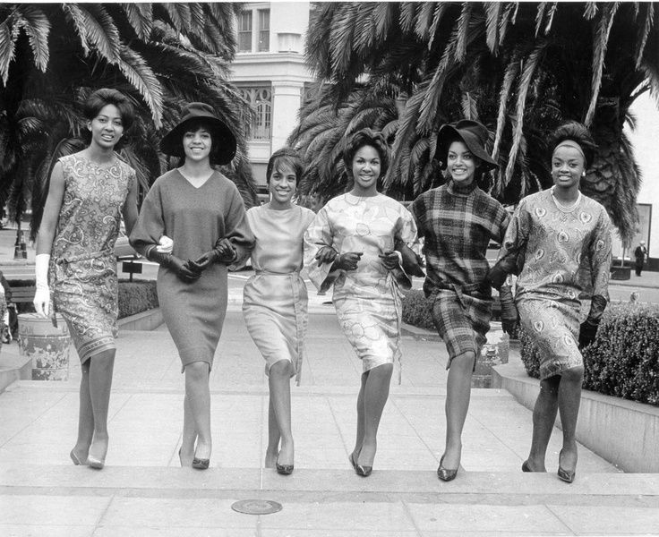

AACC Definition

AACC
Hi! Welcome to the official website of the John. F Kennedy Catholic African American Culture Club.
Established in 2017 it is the first African American Culture based club at Kennedy Catholic.
We strive to educate, empower, and encourage our members. If you are interested in joining please see the "How to Join".
How to Join:
Please contact Naomi McDonald, Zurene Diaz, or Onaseta Momodu